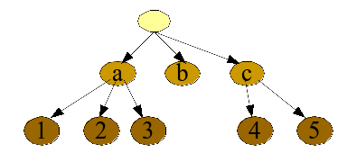
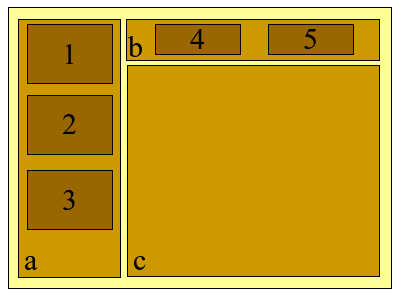
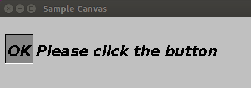
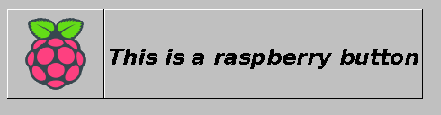
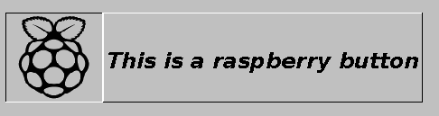

So let's continue building up our own toolkit.
We have covered most of the basic mechanisms,
with the classes Component,
Container, and
LayoutManager, implementing
the core mechanisms for layouts, repaints, and event listeners (mouse
and keyboard). But we are missing actual widgets such as buttons
or labels.
But what is a widget exactly? Widgets are essentially subclasses
of the classes
Component or
Container.
It is important to understand the polymorphic nature
of the layout tree that stems from using widgets.
The layout tree is an object graph,
organized as tree with nodes and leaves. The nodes are objects
that are instances of the class
Container or any subclass extending
the class Container.
The leaves are instances of the class
Component or any subclass
extending the class Component,
but not extending the class Container.
|  |  |
|---|
So far, we have no widgets, we have no classes extending
either the class
Component or
Container.
It is time we fix this, implementing a few classical widgets.
A label widget is a component that displays a string of characters,
using a given font.
The label widget automatically calculate
is preferred size from the given string and the font. If no specific
font is set up, then a default font is automatically selected.
You can look in the Java package
object.gui.widgets for the class
Label. We gave you the full code
since it is your first widget. Pay attention to the following
points:
If something is not clear, ask for help since you are about to implement your own widget: a button.
Now it is your turn to code your widget: a button. In its
most simple form, a button widget is a component that displays
some text over a solid-color background. Like for example,
a button "OK" over a gray background. This is obviously
a very simple button, but let's start with that.
Look again in the Java package
object.gui.widgets for the class
Button.
So go ahead, finish the implementation.
You can use our test class
TextButtonExample in the
Java package object.gui.examples.
It displays a "OK" button and a text label. It should look
like this:
Wondering about how to get the shadows giving the impression
that the button is raised up above the surrounding gray surface?
To get this nice visual shadow effect, you may use the method
paintRaisedComponentShadow
and
paintDepressedComponentShadow
defined on the class
object.gui.widgets.Util. Look at
the class Label
to see how to do it. It is a nice visual effect,
isn't it? Good graphic design is full of those
small details.
Obviously, you would like to be able to click on a button,
wouldn't you? Of course you would. And when you do, you would
like to see a visual cue that the button is pressed and then released
as you click it.
Indeed, providing a visual cue
is an important part of the quality
of graphical user interface, otherwise the end user is always
wondering if his or her actions were ignored or taken into account.
Let's consider a visual cue like this one for our button:
|  |
|---|
See, on the left-hand side, the button seems like raised above
its surrounding. When the end user presses the left button on the mouse,
the button appears as depressed like in the right-hand-side figure.
So let's implement that functionality. What do we need?
Regarding the first feature, the visual cue is easily implemented
using the following methods.
You may use the methods
paintRaisedComponentShadow
and
paintDepressedComponentShadow
defined on the class
object.gui.widgets.Util.
You may also use the methods
Color.darker() and
Color.brighter() to
darken the button background color when pressed and brighten it when
released.
Regarding the second feature, our button needs to register a
mouse listener. Just like this, using an inner class:
public class Button extends Component {
boolean m_pressed;
public Button(Container parent) {
super(parent);
...
Listener l = new Listener(this);
setMouseListener(l);
}
private static class Listener implements MouseListener {
Button m_button;
Listener(Button b) {
m_button = b;
}
@Override
public void mouseMoved(Component c, int x, int y) {
...
}
@Override
public void mousePressed(Component c, int x, int y, int buttons) {
m_button.m_pressed = true;
m_button.repaint();
}
@Override
public void mouseReleased(Component c, int x, int y, int buttons) {
m_button.m_pressed = false;
m_button.repaint();
}
@Override
public void mouseEntered(Component c, int x, int y) {
}
@Override
public void mouseExited(Component c) {
}
}
}
So go ahead, implement this functionality.
You can try your code with our example: the class
TextButtonExample.
It should look like this below. On the left-hand side,
the button is released. On the right-hand side,
the button is pressed.
Make sure that you understand
the execution flow happening here.
Especially, understand the execution when pressing the button
on your mouse and then releasing it. Understand the callbacks
on the mouse listener, the repaint requests, and the asynchronous
repaints that provide the visual cue. See how fast it is to ask
for a repaint... We have two asynchronous repaints, one
when the button is pressed and the other when the button is
released. Remember, many things happen asynchronously in the
world of graphics.
Most developers struggle with this very point,
so make sure you are discussing it with others
.
Let's improve our button.
Everybody loves a button with images, just like depicted below.
On the left-hand side, the button is released. On the right-hand side,
the button is pressed.
|  |  |
|---|
Look at the class
IconButtonExample to see
how a button with a background image is created.
What you need to do is to modify the class
Button so that it
paints the image and also that it computes its
preferred size based on the size of the image.
Wondering how could you know the size of an image? Well,
look at the methods on the class
object.gui.window.Image.
Wondering how to draw an image on the screen? Well,
look at the methods on the class
object.gui.window.Graphics.
But we are sure that you already knew how to find out
what you needed, right?
So go ahead, finish the implementation.
You can use our test class
IconButtonExample in the
Java package object.gui.examples.
When you are done, it should display a raspberry button and a text label,
as depicted
above.
Now, forget a second that you are implementing a button,
meaning forget that you are writing the code for the class
Button. Instead, please
adopt the perspective of a developer that is designing a
graphical user interface and wanting to put a button on the screen.
If you want a button to be part of your graphical interface, then you probably
want that the end user to be able to click on it. Therefore, you need a way in your
code to know if the end user has clicked on that button.
You may also want to know if the button is currently pressed or released.
What you need is the ability
to attach a listener to your button. The listener interface would look
like this:
public interface ButtonListener {
void clicked(Button b);
void pressed(Button b);
void released(Button b);
}
And the code to create a button and attach a listener
would look like this:
Button b = new Button(); ButtonListener l = new ButtonListener(b); b.setListener(l);
Cool. So we want this feature, but our current
class Button does not
support this feature, so we need to design and code it.
First, please note that the interface
ButtonListener
is given to you in the same Java package as the class
Button.
Then, our button needs to
listen to mouse events and
tranlsate those events into events on its button
listener, if it has one.
Your button is already listening to mouse
events and it already tracks if the button is pressed or
released. This was necessary to provide the corresponding
visual cue, using shadows. So invoking the methods
pressed and
released on the
button listener
when pressed or released should be rather easy.
What about calling the listener method
clicked when the button is clicked?
Well, we already implemented a click detector in an earlier
task, remember? So, let's do it again here. Piece of cake!
When you detect that the button has been clicked, you will
invoke the method clicked
on the button listener, if there is one.
Let's not forget also to add the possibility to attach a button
listener to a button:
public class Button extends Component {
ButtonListener m_bl;
public void setListener(ButtonListener al) {
m_bl = al;
}
}
To test your code, you can use our test class
IconButtonExample in the
Java package object.gui.examples.
It already registers an button listener onto the rapsberry button,
once you have the right automaton, you should see something printed
in the console when clicking the button.
What is important here?.
Congratulations if it works! But the fact that
it works is not what is the most important here.
What is the most important is your understanding and learning:
You understood all these points? Yes? That's great. Congratulations.
But if it is not the case, you know what we are going to say, right?
Ask questions until you do.
See, once you start with event-oriented
programming, your code is mostly organized around listening and
reacting. Make sure that you discuss this programming paradigm
among students and with the teaching staff.
Please do commit your work.